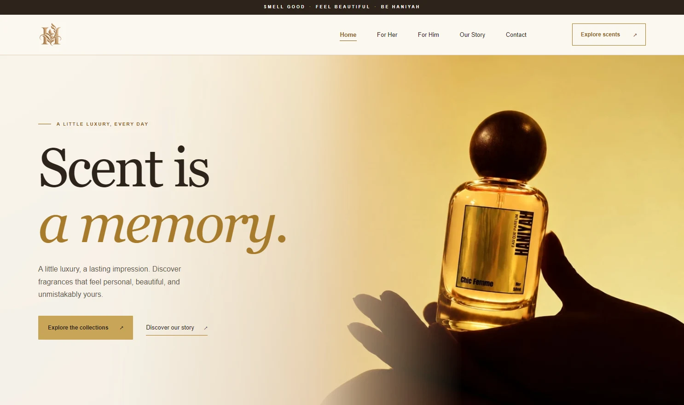
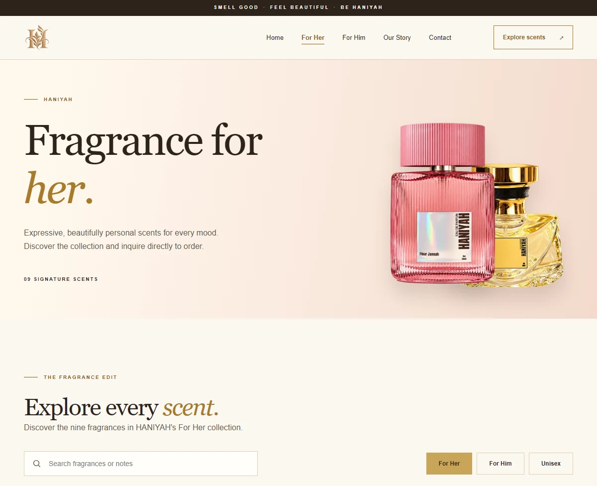
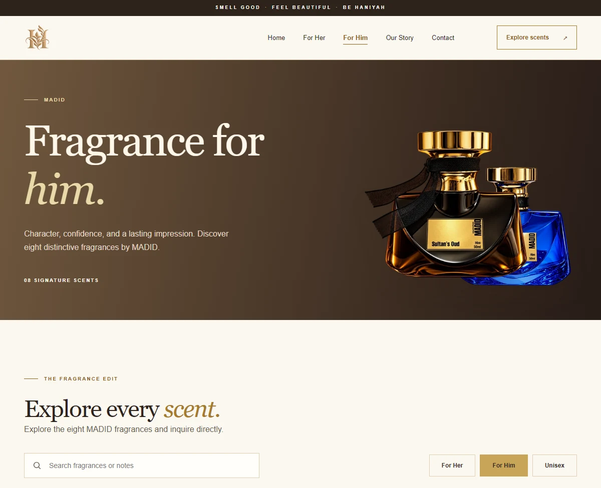
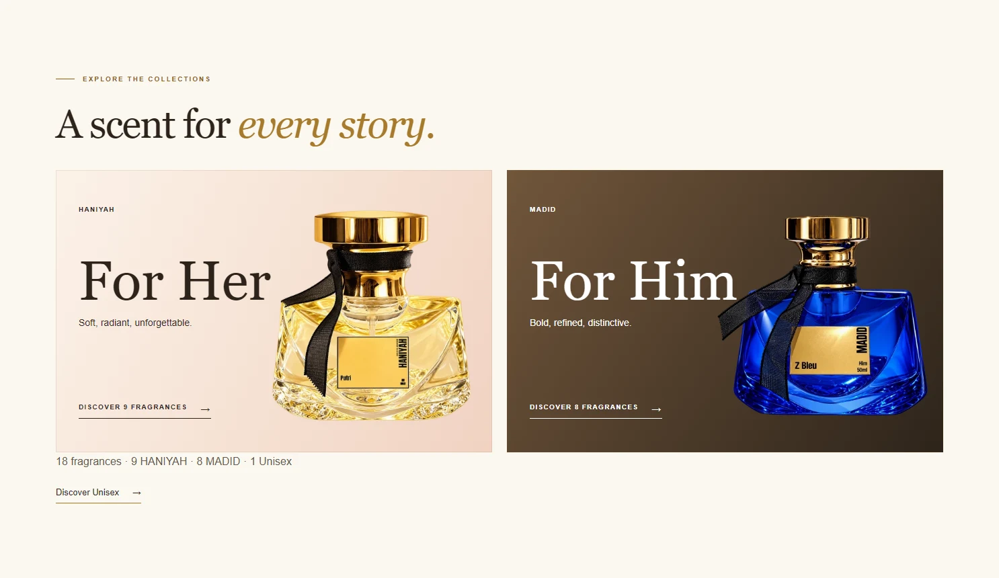
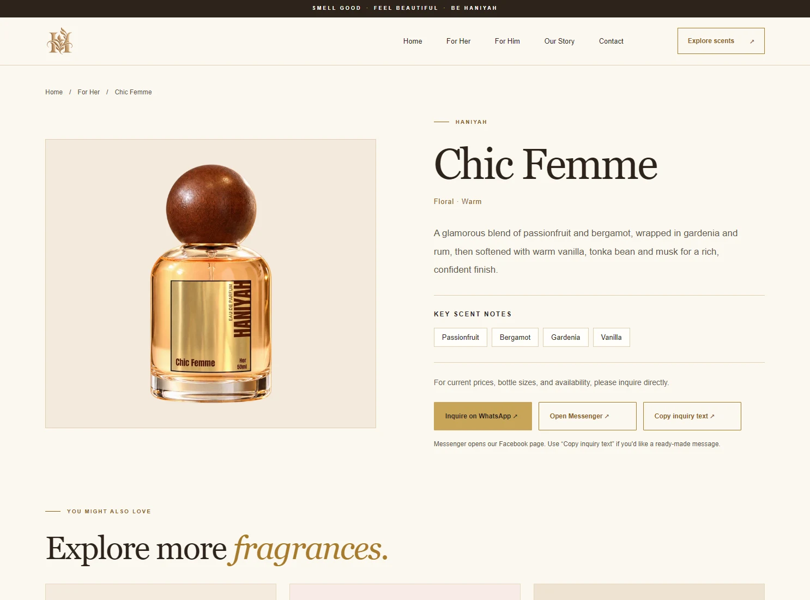

BRAND IDENTITY / WEB DESIGN / DIGITAL EXPERIENCE — 2026
HANIYAH
BRAND DESIGN / LOGO DESIGN / ART DIRECTION / PRODUCT IMAGE EDITING / COPYWRITING / WEB DESIGN / RESPONSIVE IMPLEMENTATION / DIGITAL EXPERIENCE / DEPLOYMENT
HANIYAH is an Arabic-inspired perfume brand built around elegance, memory, and personal expression.
The project began with the visual identity and gradually developed into a complete digital catalog experience — bringing together branding, product presentation, copywriting, image editing, responsive web design, and deployment under one cohesive direction.
COMPLETED & LAUNCHED / HANIYAH.SHOP

01 / The project
FROM
SCENT LINE
TO BRAND
WORLD.
Developed for HANIYAH, an Arabic-inspired perfume brand, this project involved creating a complete visual identity and digital presence. I handled everything from the logo and monogram design to product imagery, fragrance descriptions, responsive website development, and the successful launch of haniyah.shop.
02 / The approach
MAKE IT FEEL
CLASSY, NOT COLD.
The goal was to create an online presence that felt refined and premium without becoming overly decorative.
A warm palette of ivory, champagne gold, sand, and espresso was paired with editorial typography, spacious compositions, and product-focused imagery to give each fragrance room to feel distinct while keeping the overall experience unmistakably HANIYAH.
03 / Product presentation
PRODUCTS SHOWN
WITH INTENTION.


Image editing, art direction, and fragrance copy work together across the collection. Each bottle stays central, while scent notes and descriptions give it a distinct character within the wider HANIYAH identity.
04 / The finished website
A CATALOG THAT
FEELS ELEVATED.

The final website was developed as a responsive fragrance catalog featuring HANIYAH's complete collection across women's, men's, and unisex scents.
The experience includes individual fragrance pages, product discovery and search, featured and related fragrances, responsive navigation, and direct inquiry paths for customers who want to order or learn more.
Rather than building a traditional checkout experience, the site was designed around HANIYAH's current ordering workflow, allowing customers to explore the collection first and continue through direct contact.
The experience was refined across desktop and mobile before being launched at haniyah.shop.

HOME / FOR HER / MADID · FOR HIM / UNISEX / OUR STORY / CONTACT / FRAGRANCE DETAILS
05 / My role
WHAT I HANDLED.
One cohesive direction, from the first identity decisions to a working fragrance catalog. The completed project brings the brand, imagery, language, and customer inquiry experience together on haniyah.shop.
LIVE SITE ↗